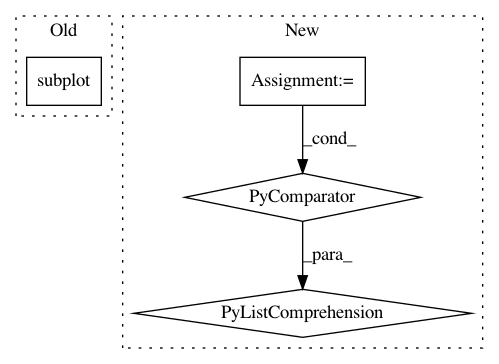

57a14faee7b0198e056e474c04ea346d148a2835,cellprofiler/modules/identifyprimaryobjects.py,IdentifyPrimaryObjects,display,#IdentifyPrimaryObjects#Any#Any#,1194
Before Change
orig_axes = figure.subplot(0,0)
label_axes = figure.subplot(1,0, sharexy = orig_axes)
outlined_axes = figure.subplot(0,1, sharexy = orig_axes)
table_axes = figure.subplot(1,1, sharexy = orig_axes)
title = "Input image, cycle //%d"%(workspace.measurements.image_number,)
figure.subplot_imshow_grayscale(0, 0,
workspace.display_data.image,
After Change
figure.subplot_table(
1, 1,
[[x[1]] for x in workspace.display_data.statistics],
row_labels = [x[0] for x in workspace.display_data.statistics])
def calc_smoothing_filter_size(self):
In pattern: SUPERPATTERN
Frequency: 3
Non-data size: 4
Instances
Project Name: CellProfiler/CellProfiler
Commit Name: 57a14faee7b0198e056e474c04ea346d148a2835
Time: 2013-03-18
Author: leek@broadinstitute.org
File Name: cellprofiler/modules/identifyprimaryobjects.py
Class Name: IdentifyPrimaryObjects
Method Name: display
Project Name: Rostlab/nalaf
Commit Name: d5989fd2407660844d444f33a2865bb84c9242ab
Time: 2015-06-17
Author: carsten.uhlig@gmail.com
File Name: nala/utils/writers.py
Class Name: StatsWriter
Method Name: makegraph
Project Name: scikit-optimize/scikit-optimize
Commit Name: b8f10b387de929bcb250e4750064355e50b44317
Time: 2016-04-18
Author: manojkumarsivaraj334@gmail.com
File Name: examples/plot_gp_minimize_1d.py
Class Name:
Method Name: